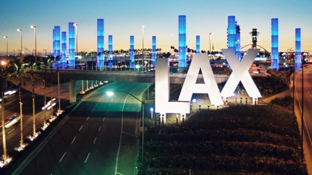
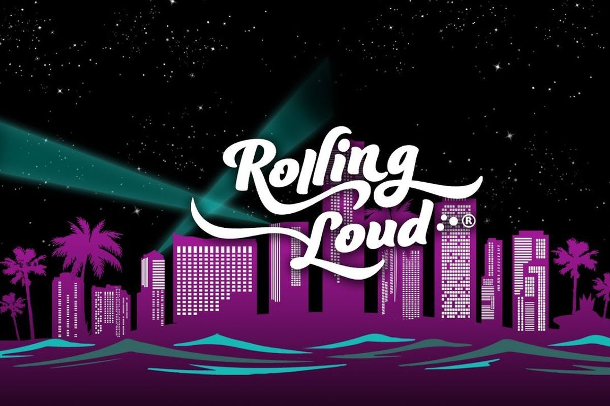

Story Time
Abording the Plane
First Time in Cali
The first time I walked out them doors of the airport. I was embraced with heat. Even though it was something like 9 or 10pm at night. Plus, I was wearing heavy clothing because it was snowing everwhere before I left. I had to take my hoodie off right there and then. I was looking at my surroundings looking for the terminal bus that will take to a Lfyt. That will take me to my brother's house. When I was in the lyft it really hit me that I'm actually here in the flesh. I seen the palm trees that I only seen in movies. It was just crazy to me. The Lfty pulled up to my brother house. I got out the car and was greeted with his big, cheesing face. He was smiling ear to ear. Knowing that he was happy to see me. I got the car dap him up and went inside. We was just catching up, playing the game, cracking jokes like we usually do. We just ready for the next day. Which would be my first ever live concert.
Rollin Loud
My first concert ever. Rollin Loud. Where all the biggest and up in coming artist perform there. What was so special about rolling loud is that thier are 3 stages. And different artists performing on them. So you'll have to choose who you wanted to see the most at that time and etc. There also stuff to do in between the times waiting on the artist to show up. Like eating, playing basketball, football, scoccer, play arcade games, skateboarding and so much more. I was so happy to see my favorite artists perform right in front of me. It was lit. The event last for 2 days. After the 2 days, we went to universal studios and had a straight blast. We had went to hogwarts and got on the harry poter ride. Hop on the mummy ride. Took a tour of universal studios talking about how they started and what not. Got on the simpsons and after that ate a giant dount. I got on some other rides then left. On the last day, we went to the beach and I finally seen the ocean for the first time. It looked really nice. After the beach I took a lyft to the LAX. Dap my brother up. And told him until next time. Flew back to lou, seen my mom at the airport and then went home. I was really bummed out becasue it was back to the same old same old. That I don't miss. But its ok because it won't be my last time there in cali.